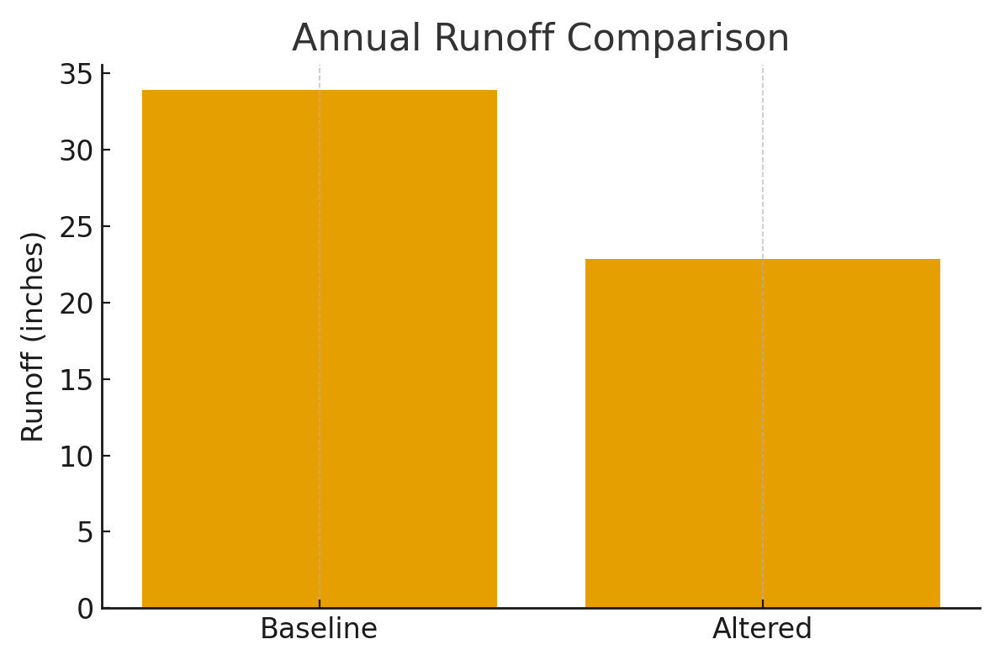
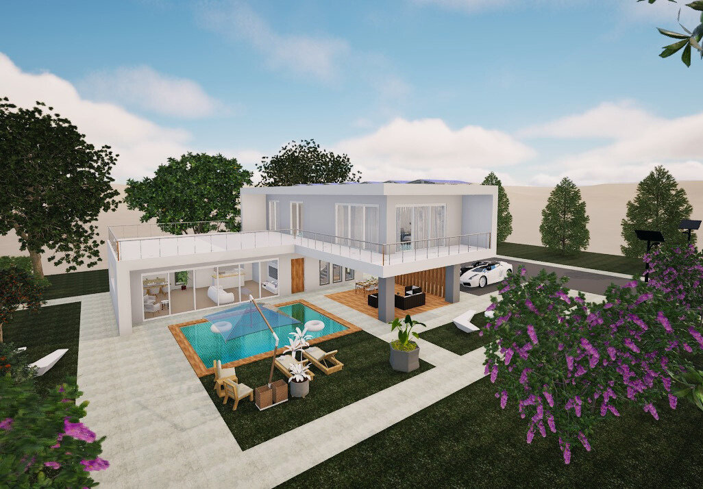
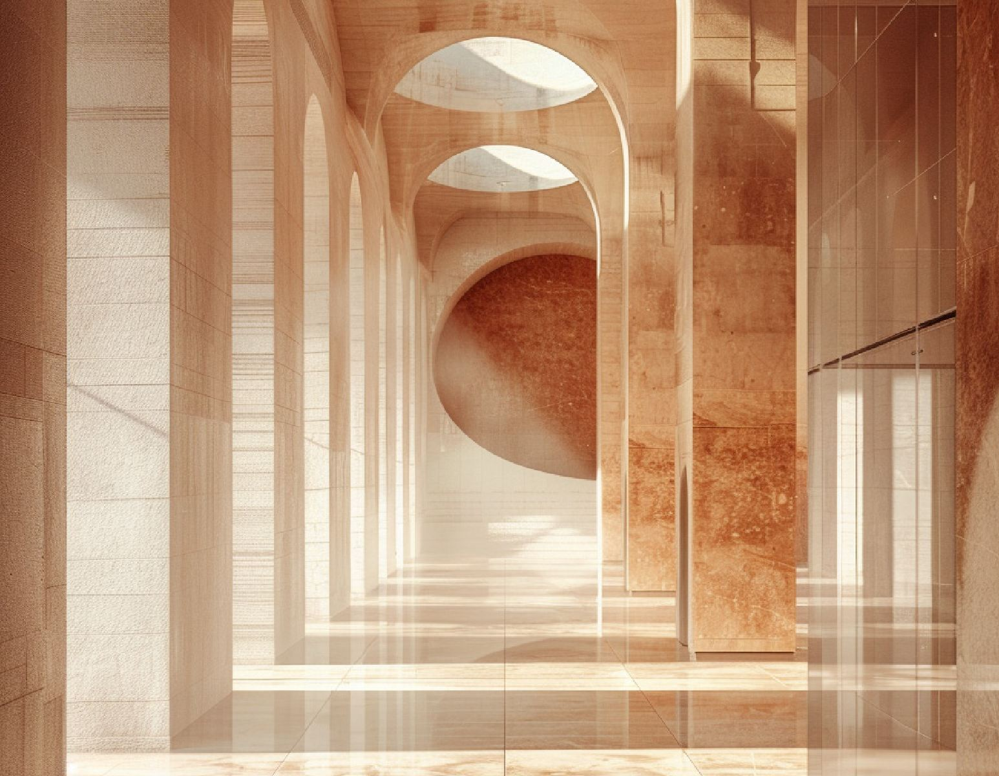

Architect · Sustainable Building Systems · Northeastern University
Deshpande
I design buildings around light, climate and the people inside them. I trained as an architect in Bangalore, and I'm now in Boston learning to measure what good design does for the planet.

Start with these
 DesignMrittikaA pottery and sculptural experience centre in Ramanagara, Karnataka, designed as my undergraduate thesis.5 blocks on the siteRead the case study →
DesignMrittikaA pottery and sculptural experience centre in Ramanagara, Karnataka, designed as my undergraduate thesis.5 blocks on the siteRead the case study → Building systemsIntegrated Systems Section: Seattle SchoolA single building section for a south-facing classroom wing that brings daylight, passive solar heating, ventilation, acoustics, rainwater and solar power together in one design.58% lower annual EUI (88.2 to 36.9 kBtu/ft²·yr)Read the case study →
Building systemsIntegrated Systems Section: Seattle SchoolA single building section for a south-facing classroom wing that brings daylight, passive solar heating, ventilation, acoustics, rainwater and solar power together in one design.58% lower annual EUI (88.2 to 36.9 kBtu/ft²·yr)Read the case study → Building systemsIf These Walls Could TalkA thermal and moisture study of a brick cavity wall at Richards Hall, Northeastern University, using thermography, hand calculations and Building Science Advisor to compare two retrofits.U-0.072 calculated wall U-factor vs U-0.080 code maximumRead the case study →
Building systemsIf These Walls Could TalkA thermal and moisture study of a brick cavity wall at Richards Hall, Northeastern University, using thermography, hand calculations and Building Science Advisor to compare two retrofits.U-0.072 calculated wall U-factor vs U-0.080 code maximumRead the case study →Where it started: a studio in Bangalore
Five years of a Bachelor of Architecture at BMS School of Architecture, in a city where the weather is mild enough that good design can do most of the cooling.
Studio taught me to start with the site. I'd read the land, study the precedents, then work through ideas in sketches, plans and 3D models until the building felt right for where it stood.
Somewhere in those years, sustainability stopped being a box to tick and became the reason I design. I like ideas that are creative and also practical, and spaces that are kinder to the people who live in them and to the environment around them.
Collaboration and lifelong learning are key to meaningful design.
Learning past the syllabus
I kept signing up for one more workshop. Looking back, they trace a path: from parametric tools and façades toward zero energy, green design and design that serves communities.
- Nov 2022ZEMCH 2022: Zero Energy Mass Custom Home · International Design Workshop
- Oct 2023Parametric Modelling in Rhino · Kaarwan
- Mar 2024Introduction to Twinmotion · Delupsa
- Mar 2024Vastu Compliant Design · Kaarwan
- Mar 2024Research Paper Writing · Kaarwan
- Apr 2024Façade Design Masterclass · Architecture India
- Jul 2024Café & Restaurant Design Masterclass · Architecture India
- Jul – Oct 2024Fundamentals of Sustainable Architecture · Delupsa
- Sep – Nov 2024UGREEN: Green Design Week
- Jan 2025Introduction to Socially Engaged Design · University of Michigan, Coursera
Sustainability and social design
Into practice
Five years of studio projects in Bangalore, and an internship that took that work onto real sites.
 DesignAnvaya Youth CenterA five-level youth centre by Allalasandra Lake in Yelahanka, Bengaluru, built around cascading terraces.5 levels of cascading terracesRead the case study →DesignMrittikaA pottery and sculptural experience centre in Ramanagara, Karnataka, designed as my undergraduate thesis.5 blocks on the siteRead the case study →
DesignAnvaya Youth CenterA five-level youth centre by Allalasandra Lake in Yelahanka, Bengaluru, built around cascading terraces.5 levels of cascading terracesRead the case study →DesignMrittikaA pottery and sculptural experience centre in Ramanagara, Karnataka, designed as my undergraduate thesis.5 blocks on the siteRead the case study → DesignSattvana ResortAn ideation-stage study of three pod types to find the one best suited to a resort in an island setting.3 pod types studiedRead the case study →
DesignSattvana ResortAn ideation-stage study of three pod types to find the one best suited to a resort in an island setting.3 pod types studiedRead the case study → PracticeProfessional Practice at BGDPLMy architectural internship at BGDPL (CNTC India), from site studies of a 50-storey tower to pod resorts, an office renovation and a resort masterplan.50 floors in the tower I studied on siteRead the case study →
PracticeProfessional Practice at BGDPLMy architectural internship at BGDPL (CNTC India), from site studies of a 50-storey tower to pod resorts, an office renovation and a resort masterplan.50 floors in the tower I studied on siteRead the case study →Two cities, one sun
Every building I design starts with where the sun will be. Bangalore sits close to the equator, so the sun passes almost overhead. Boston's sun stays low across the south in winter. Same star, very different buildings. This is where it is right now.
Boston: learning to measure it
At Northeastern I study Sustainable Building Systems. Studio taught me how a building should feel; now I'm learning to prove how it performs. My graduate work follows the order I'd use on a real project.
Read the climate
Before any form, understand the weather, water and site.
 Climate & waterBangalore Climate: Experience, Data and Design StrategiesA climate study of my home city that sets lived experience against Climate Consultant data and turns both into passive design strategies.22 years I lived in Bangalore before my master'sRead the case study →
Climate & waterBangalore Climate: Experience, Data and Design StrategiesA climate study of my home city that sets lived experience against Climate Consultant data and turns both into passive design strategies.22 years I lived in Bangalore before my master'sRead the case study →
Climate & waterBeyond Buildings and WaterA study of water at three scales: my personal footprint, my home's fixtures, and stormwater on Northeastern University's West Village campus.1,033 m³ my yearly water footprintRead the case study →Model the energy
Simulate it before it's built.

Integrate the systems
Structure, skin and services, drawn as one.
Building systemsIntegrated Systems Section: Seattle SchoolA single building section for a south-facing classroom wing that brings daylight, passive solar heating, ventilation, acoustics, rainwater and solar power together in one design.58% lower annual EUI (88.2 to 36.9 kBtu/ft²·yr)Read the case study →Building systemsIf These Walls Could TalkA thermal and moisture study of a brick cavity wall at Richards Hall, Northeastern University, using thermography, hand calculations and Building Science Advisor to compare two retrofits.U-0.072 calculated wall U-factor vs U-0.080 code maximumRead the case study →
DesignRevit Project: Courtyard VillaA two-story contemporary villa modeled in Revit around a private courtyard, then reinterpreted with AI image generation for advanced visualization.2 floors, plus a roof with solar panelsRead the case study →Ask the people inside
A building is only as good as it feels to use.
Learn from the best
Standards and the buildings that set them.
 EnergyThe Rocky Mountain Institute (RMI) Innovation Center: Passive Design Case StudyAn analysis of how a net-zero office in the Colorado mountains heats itself with sun, insulation and airtightness instead of a furnace.52% window-to-wall ratio on the south facadeRead the case study →
EnergyThe Rocky Mountain Institute (RMI) Innovation Center: Passive Design Case StudyAn analysis of how a net-zero office in the Colorado mountains heats itself with sun, insulation and airtightness instead of a furnace.52% window-to-wall ratio on the south facadeRead the case study →Design & drafting
- AutoCAD
- Revit
- SketchUp
- Rhino
Energy & analysis
- eQUEST
- DesignBuilder
- OpenLCA
Visualisation
- Enscape
- Twinmotion
- Photoshop
- InDesign
Languages
- English
- Kannada
- Hindi
- Telugu
Off the drawing board
Outside the studio I keep my hands busy: models, glass mosaics, zentangles, sketches, a camera, and lately AI. Each one teaches me something about form, colour and light that ends up in my buildings. Open any of them to see the work.

Hover to flip through, click to open the gallery.
Rotaract Club of BMS Yelahanka
- Pedal for PlanetA 10 km cycle rally for health awareness across Bangalore Urban. July 2022 · 20 hours
- Food for ThoughtA food donation drive run by the club. 40 hours
- Project AbhirudhiA summer camp for the children of our adopted village. May 2022 · 20 hours
- Pulse PolioVolunteering at the national immunisation drive at Bangalore City Railway Station. February 2022
Let's design the next chapter.
I'm looking for internships and roles in sustainable design and building performance. If you're working on buildings that do more with less, I'd love to hear about it.